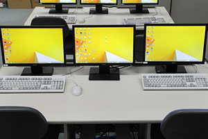
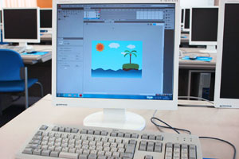

国家試験への準備
課題研究では、ITパスポート試験の合格を目標に、IT・経営・法務・セキュリティの基礎を横断して学びます。
コースと授業
ITパスポート試験を軸に、情報分野の基礎知識を分野横断で学びます。
課題研究では、ITパスポート試験の合格を目標に、IT・経営・法務・セキュリティの基礎を横断して学びます。
コンピュータの仕組みに加え、企業活動、法務、管理、セキュリティなどを含む広い基礎知識へ触れます。
授業で得た知識を試験という共通基準で確かめ、次の資格や進路学習へつなげます。
「課題研究」では、試験内容を授業科目と小さな目標へ結びつけます。
「課題研究」では、知識問題と実技を行き来して理解を確かめます。
「課題研究」では、読み違い、知識、操作、時間のどこで失点したか見ます。
「課題研究」では、合格後も制作やデータ管理で知識を使います。
「課題研究」では、試験範囲を授業科目と結びつけます。
「課題研究」では、文書、表計算、プログラム、ネットワーク、セキュリティを小さな目標へ分けます。
「課題研究」では、間違いを、読み違え、知識不足、操作ミス、時間不足へ分けます。
「課題研究」では、正解を書き写すだけで終わらせず、同じ形式の問題をもう一度解きます。
「課題研究」で覚えた内容を、授業の操作や制作へ戻します。
「課題研究」では、操作で気づいた仕組みを知識問題でも確かめ、丸暗記を減らします。
「課題研究」では、資格名と級だけでなく、使った教材、学習時間、直した弱点を残します。
「課題研究」では、進路面談では、合格まで続けた方法も具体的な経験として伝えます。
「課題研究」の次は、難易度だけでなく「C言語」や希望進路との重なりで選びます。
「課題研究」では、資格を増やすこと自体を目的にせず、できる操作と判断を広げます。
「課題研究」では、資格対策を行う学年、授業内と放課後の割合、受験料を確かめてください。
「課題研究」では、ITパスポートから基本情報技術者へ進んだ例など、実際の学習経路も質問できます。


